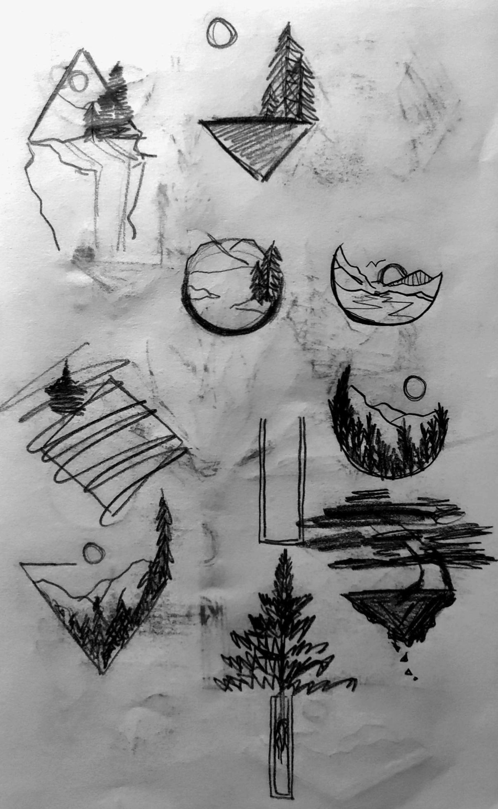

This is a graphic that I created that I also actually got to screenprint onto T-shirts for the first time! Keeping in mind the fact that this would be screenprinted (and thus the design couldn't be too detailed), I wanted to do a simple but blocky design that would show up well on a shirt. Because I hail from Colorado and I've done my fair share of wilderness exploration and adventuring, I wanted to create a piece that would honor the majesty of the Rockies but also look at nature from a different perspective.
I really wanted to play around with the juxtaposition of nature and its freedom and fluid compared to shapes and geometry which has more structure and definition.